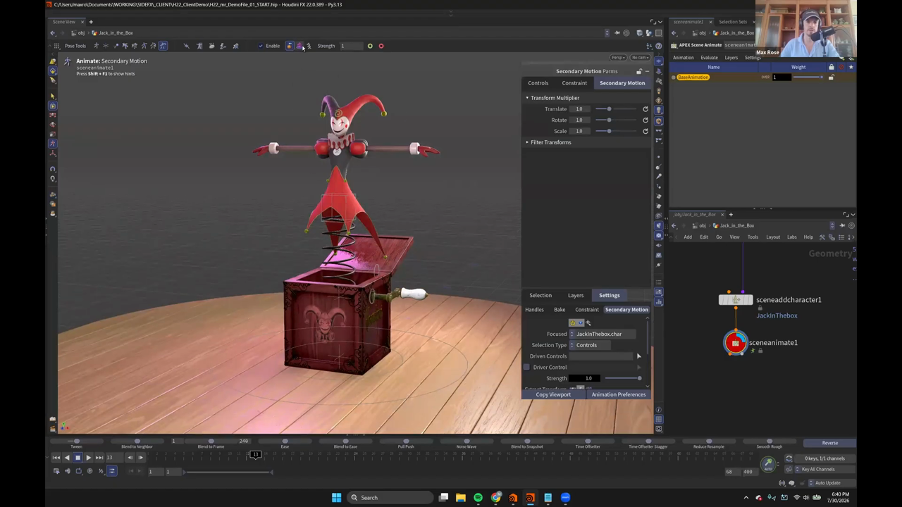
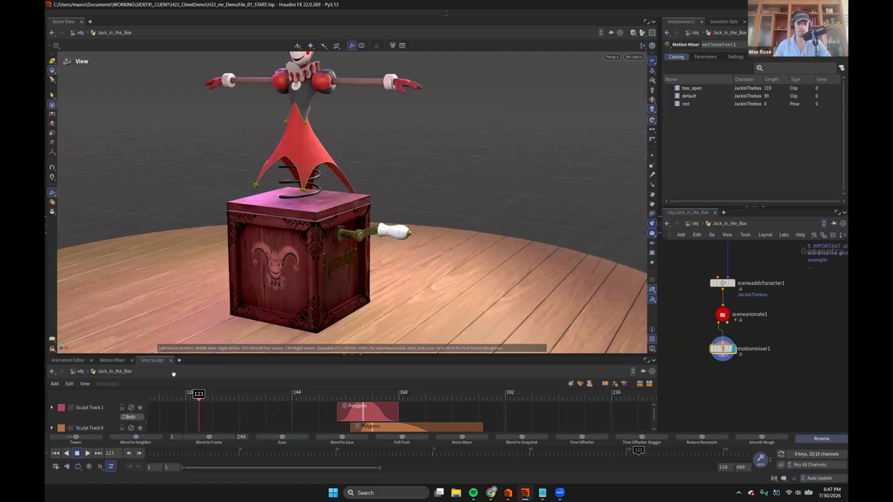
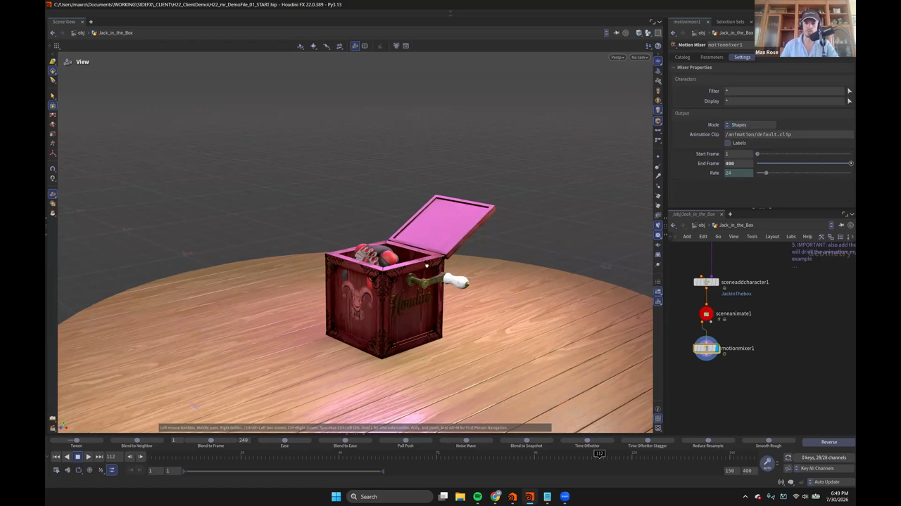

Houdini 22 KineFX アニメーション 4 — Secondary Motion と Motion Mixer で仕上げる
出典: Animate in KineFX | Part I | Max Rose | Houdini Illume （SideFX 公式ウェビナー / 講師 Max Rose さん / Houdini FX 22.0.389 / 1:22:20 / 英語）の 39:02〜50:30 部分。 このページは、上記の動画を見ながら自分用にまとめた日本語の学習メモです。SideFX 公式の翻訳ではありません。 前回はSet Driven Key でびっくり箱の仕掛けを作るでした。
この記事で扱うこと
前回の仕掛けを使って、キーをほんの数個打っただけの素朴なアニメーションができています。 ここにセカンダリモーションで動きの気持ちよさを足し、 最後に Motion Mixer で2つのアニメーションを繋いで仕上げます。
1. Secondary Motion に入る
画面上部の pose tools の中にあります。並んでいるのは Full Body IK、Full Body IK Posing、Ragdoll、Locators、Dynamic Motion といったもので、 Secondary Motion は一番最後です。
クリックするとすべてのコントロールが灰色になります。 これは「どのコントロールにセカンダリモーションを付けますか」と待っている状態です。 付いたコントロールは金色に変わるので、見た目で判別できます。

3種類の効果
| 効果 | 性質 |
|---|---|
lag | 遅れて追従する |
jiggle | ぷるぷる揺れる |
spring | バネのように弾む |
びっくり箱のバネなので spring を選びます。対象は spline coil のコントロールです。
重要なのは、translate に効かせることです。rotation ではありません。 バネが上下に伸び縮みしてほしいので、位置に効かせます。
プラスボタンを押すと、そのコントロールにセカンダリモーションが追加されます。 たった1つのキーフレームから、バネらしい動きが生まれます。
効果が強すぎたので、effect options で 4 に下げていました。 パネルには Transform Multiplier（Translate / Rotate / Scale）と Strength があり、 細かく調整できます。
焼く
Ragdoll のときと同じ流れです。
- フレーム範囲 1 – 100
- Additive Layer にチェック
- 新しいレイヤーに焼く
Bake Keys
セカンダリモーションの良いところとして、 キーフレームが焼き上がるのがとても速いと言われていました。
2. 二重適用の罠
次は人形自体をぐにゃぐにゃさせます。 ここでつまずきポイントがありました。
もう一度 Secondary Motion ステートに入ると、何かが飛び跳ねます。
原因は、spline coil のコントロールにまだセカンダリモーションが付いたままだからです。
すでに焼いたセカンダリモーションの上に、 生きたセカンダリモーションがもう一度乗っているので、二重に効いてしまいます。 付いているコントロールは金色（緑色）になっているので見分けられます。 選んで削除すれば元に戻ります。
人形に付ける
- 箱のコントロールは不要なので隠します
- 人形のコントロールをすべて選択します
- root コントロールだけは外します。 残すと変換が二重にかかっておかしくなるためです
- 今度は rotation チャンネルに
springを効かせます
プラスを押した直後は「完全にぐちゃぐちゃ」でした。 講師の方も「これは誰も見たくない動き」と言っていました。そこで strength で制御します。
- strength をいったん 0 まで下げます
- 効かせ始めたいフレームで
Alt+クリックしてパラメータにキーを打ちます（緑になります） - 矢印キーで進み、人形が飛び出した頂点あたりで strength を上げます
これで飛び出した瞬間だけ大きく揺れるという動きになりました。 最後に 1 – 100 で新しいレイヤーに焼きます。
3. もう1本のアニメーションをクリップとして作る
いまある動きは「人形が飛び出して揺れる」ところだけです。 その前の「レバーを回して箱が開く」という予備動作が足りません。
作り方は何通りかあります。
別のScene Animateを作ってアニメーションをコピーし、Motion Mixer に入れる方法もありますが、 必要なのはもう1つクリップを作ることだけです。 だったら同じScene Animateの中に作ってしまえばいい。
Animationタブを開きますNew Clipをクリックし、box_openと名付けます- 空のクリップができ、ドロップダウンで
defaultとbox_openを切り替えられるようになります
新しいクリップにはアニメーションレイヤーが無い、まっさらな状態です。 そこで人形を畳んで箱に詰め、クランクにキーを打って120フレームあたりまで回します。
これで1つの Scene Animate に2本のアニメーションが入りました。
4. Motion Mixer で繋ぐ

Motion Mixer を置くと、少し時間がかかります。
クリップを Motion Mixer のシーケンサーで扱える形式に変換しているためです。
イン点とアウト点を調べて、並べたりブレンドしたりできるクリップに直しています。
Catalog タブに変換された結果が並びます。
| Name | Character | Length | Type | Used |
|---|---|---|---|---|
box_open | JackInThebox | 119 | Clip | 0 |
default | JackInThebox | 99 | Clip | 0 |
rest | JackInThebox | 0 | Pose | 0 |
default は名前を付けていなかったクリップで、中身は人形が飛び出して揺れるアニメーションです。
Used 列で使用回数も見えます。
あとはタイムラインにドラッグして並べるだけです。
box_open を先に、default を後ろに置き、
箱が開いた瞬間に人形が飛び出すよう2つを重ねてブレンドします。
5. Apex Scene に戻して手直しする

ブレンドした結果を見ると、人形と箱が少し貫通していました。 直すにはアニメーションステートに戻る必要があります。
Motion Mixer には出力モードがあり、これを切り替えます。
SettingsタブのOutputにあるModeを、ShapesからApex Sceneに変更します- 変換に少し時間がかかります（APEX シーンとして使える形に組み直しています）
Motion Mixer Fetchを置いて、Motion Mixer を参照させます- その先に
Scene Animateを置きます
上の画像では Output の Start Frame が 1、End Frame が 400、Rate が 24 になっています。
これでMotion Mixer で組み立てた結果を、そのままアニメーションステートで触れます。
ベースアニメーションの上に fix レイヤーを足し、貫通していた部分に回転のキーを打って直せば完成です。
講師の方はここでも Scene Animate を赤い丸ノードにしていました。
「Scene Animate は必ずこうしないと気が済まない」とのことです。
この記事のまとめ
- Secondary Motion は pose tools の一番最後。灰色＝未適用、金色＝適用済みで見分けます
- 効果は
lag/jiggle/springの3種類 - バネは translate、人形の体は rotation と、効かせるチャンネルを使い分けます
- 人形に付けるときは root コントロールを外します。変換が二重にかかります
- 焼いたあとに同じコントロールへ再度付けると二重に効きます。金色のものを削除してから進めます
- 強すぎるときは strength を 0 にしてキーを打ち、効かせたい瞬間だけ上げます
- もう1本アニメーションが要るときは、同じ
Scene Animate内に New Clip を作れば済みます - Motion Mixer で繋いだあと、Output Mode を
Apex SceneにしてMotion Mixer Fetch経由で戻せば、そのまま手直しできます
Part I の本編はここまでです。次はこのあと30分以上続いた Q&A から、実演付きで出てきた小ネタをまとめます。